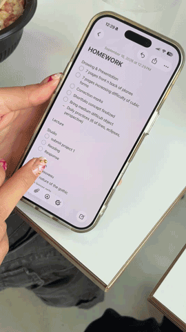

i use the notes app on my phone. and, i do have a physical planner but i don't use it - i want to though! (it's just for aesthetics now.)
my phone is always on me so planning things digitally is easier for me. i can quickly take notes and write things down immediately, so that i won't forget it right after.
having to take out a book and pen in the moment becomes a little too tedious, and sometimes not easy to grab out when the situation is inconvenient.

everything is written in my notes app - there's one main document (titled "routine biss") for my weekly schedule. i rotate between three documents: main schedule, homework list, and wishlist.
i use the check-mark feature on the notes app to cross off each thing that i've completed, and i would delete the task entirely after i'm done with the week or when it's the next class.
it's usually "things i'll probably forget" that goes into the notes document like go to blicks, meet with a friend, get something from a friend, etc. i also sometimes merge everything into one document like things to buy and homework.
i don't use my notes app to write my class schedule and times, i know it by memory.
the notes app is my bae - it's simple. whereas google calendar and notion for example have too many buttons and user-friendly options - which overcomplicates the process for me.
just keep it simple.